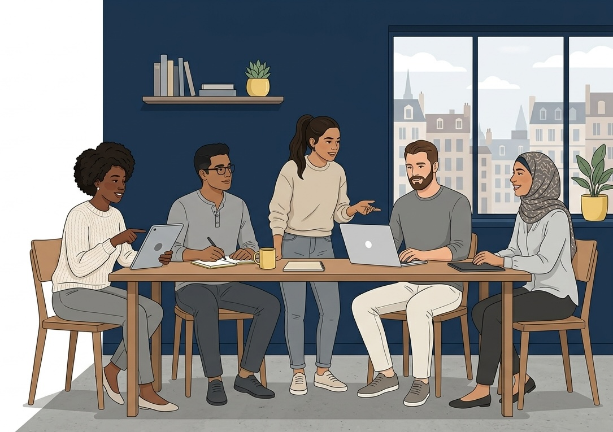
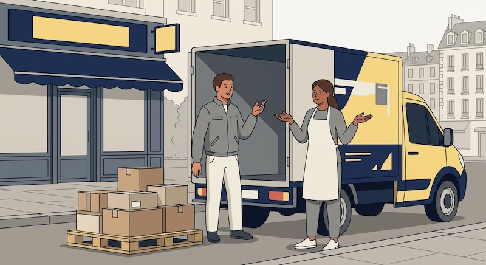

SharedTable is growing. One day, a large supermarket calls saying they would like to donate all of their unsold food, five days a week.
Ana is excited. Jonas is worried. Mira asks: “Is this too good to be true?”
The team has a big decision to make, but there is still a lot they do not know. Do they have enough drivers to handle the increased volume? What if the kitchen can’t handle that much food daily? What happens if the supermarket changes its mind in a month?
Social enterprises often face decisions like this — where information is incomplete and conditions can change. This is where three competences can help: critical thinking, risk management and adaptability.

Critical Thinking: What do we really know?
Critical thinking means questioning information before you accept it. A simple way to start is to separate three kinds of statements.
| Type | What it is | Example |
|---|---|---|
| Fact | Something you can check and verify | “The supermarket sent a list: 40kg of unsold food last week.” |
| Assumption | Something you believe but have not yet verified | “The kitchen can use all of this extra food.” |
| Opinion | A personal view | “This is the best offer we will ever get.” |
Most bad decisions are not caused by missing facts. They happen because people treat assumptions as facts. Before you decide, ask yourself:
- What do we know for sure?
- What are we assuming?
- How can we check?
Risk Management: What could go wrong?
Risk management means understanding what could go wrong and preparing for it. For each risk, ask two questions: How likely is it? and How serious would it be?
| Risk | Likelihood | Seriousness |
|---|---|---|
| No driver available for daily pickups | High | High |
| Some food is already too old to use | Medium | Medium |
| The kitchen fridge is too small for the extra food | Medium | High |
Once you have assessed each risk, choose a response:
- Prevent it. Change the plan so the risk is less likely to occur. “Start with two pickups per week, not seven.”
- Prepare for it. Have a plan ready if it happens. “Ask a local volunteer group to be a backup for drivers.”
- Accept it. If the risk is small enough, move forward — but cautiously.
No matter how well you plan, you will never fully avoid risk. A social enterprise that never takes risks will find it very difficult to create real change. The aim is always to take risks with your eyes open.
Adaptability: Changing the plan, keeping the goal
The team checks the facts and decides to start small: two pickups a week. Everything runs smoothly — until a month later, when the supermarket says it can only give away half as much food as before.
They could feel let down. But the goal was never “get food from this supermarket.” It was “get good food to people who need it.” With this in mind, they change the method: they recruit two smaller grocery shops to fill the gap.

This is adaptability: changing your plan when conditions change, while never losing sight of your goal. It is not the same as giving up, and it is not the same as changing your mind every day.
Adaptability is also one of those competences you will often combine with others. Assessing a new risk? Adapt your plan. Working with a new team? Adapt your approach. As you saw in Section 1, your ability to use any competence rises and falls. You may find it easy to adapt in one situation and harder in another — that is completely normal.
Assessment — Your Turn
Activity: Fact, assumption or opinion?
Match each statement to its type.
| Statement | Type |
|---|---|
| The supermarket sent a list showing 40kg of unsold food last week. | Fact |
| The kitchen will be able to use all the extra food. | Assumption |
| If we don’t take this offer, we will never get another chance. | Opinion |
| The kitchen is open five days a week. | Fact |
| It will be easy to find volunteer drivers. | Assumption |
Multiple choice
1. The team decides to start with two pickups per week instead of five. Which competence does this best demonstrate?
- Critical thinking
- Resilience
- Risk management
- Passion
Answer: c)
2. When the supermarket reduces its donations, the team recruits two smaller shops instead. Which competence does this best show?
- Negotiation
- Adaptability
- Critical thinking
- Empathy
Answer: b)
3. Mira says, “If we don’t take this offer now, we will never get another chance.” How should the team treat this statement?
- As a fact — she is probably right
- As an assumption — it needs to be verified
- As an opinion — it reflects a personal view, not a verified reality
- As a risk — it should be added to the risk table
Answer: c)